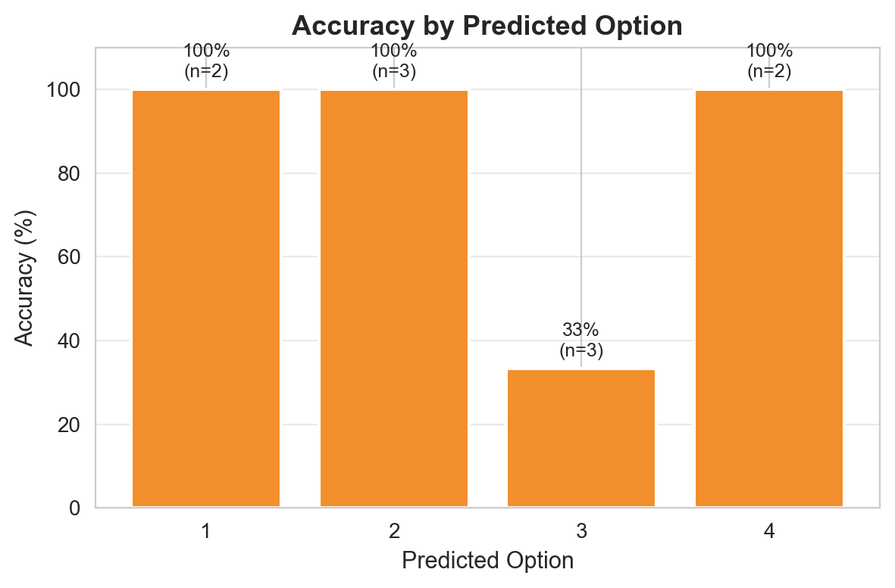
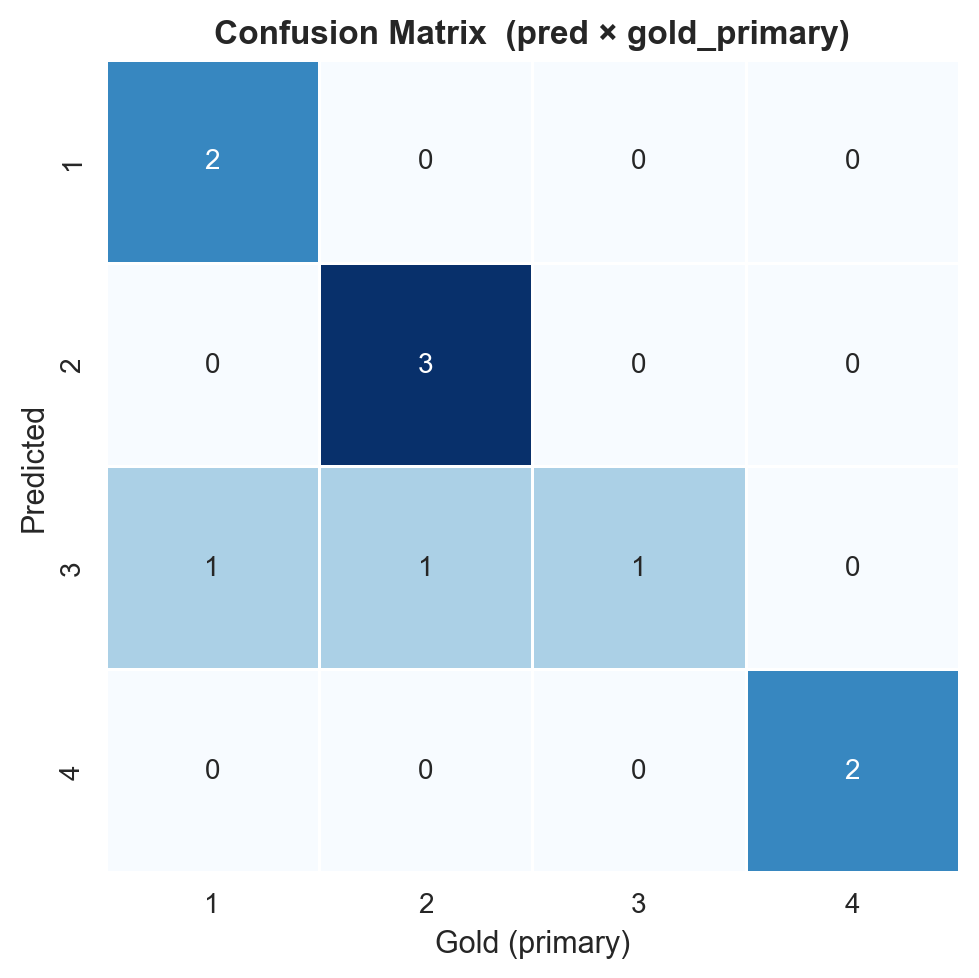
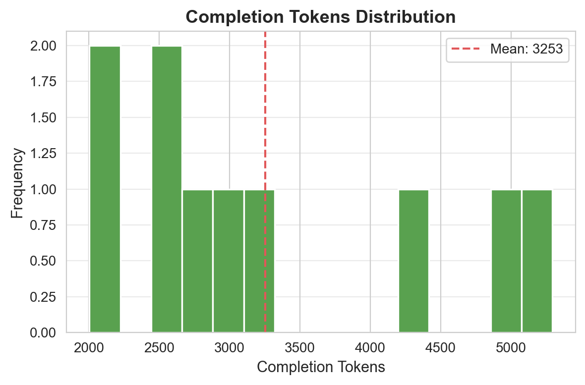
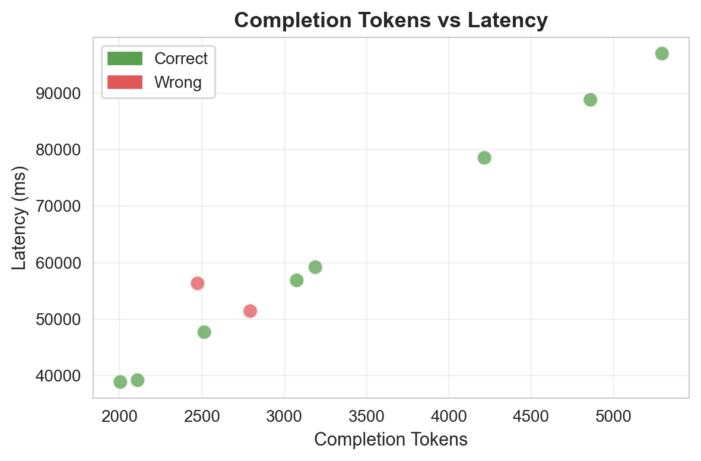
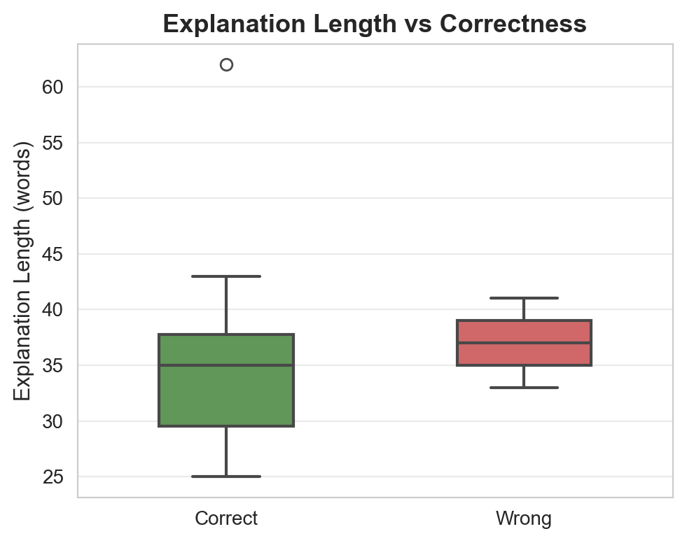
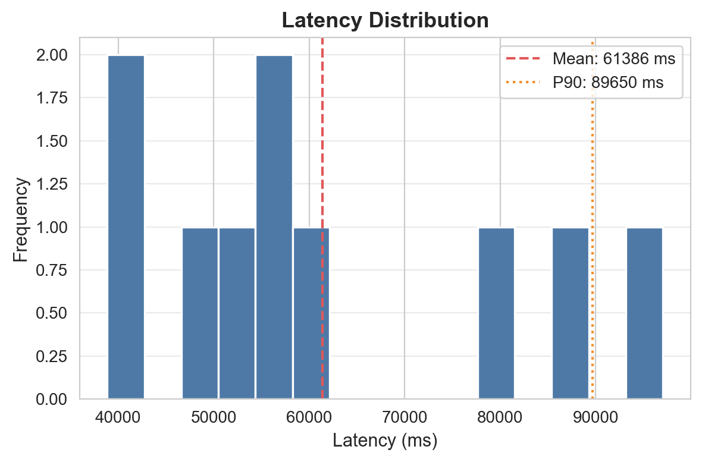
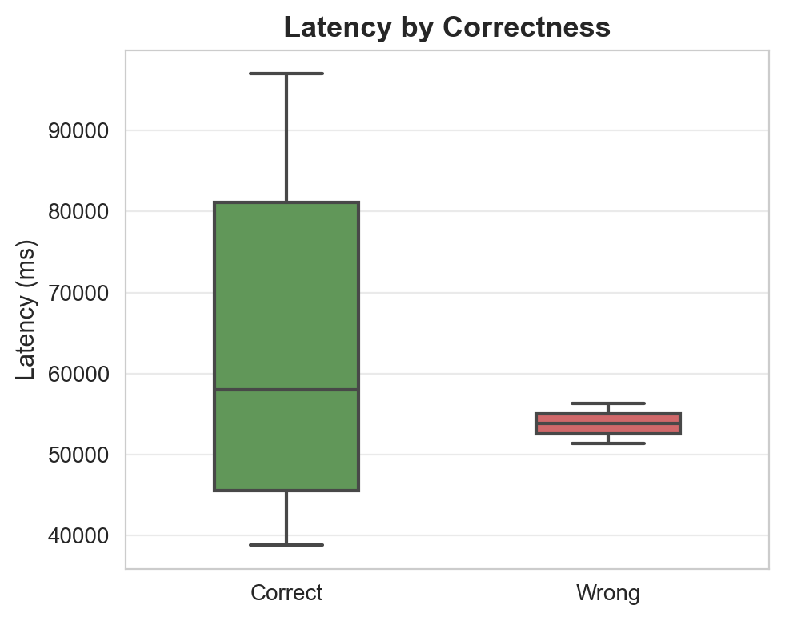

دقت کلی مدل

دقت به تفکیک گزینه

توزیع وضعیت پاسخها

ماتریس درهمریختگی

توزیع توکنهای خروجی

توکن vs تأخیر

طول توضیح vs صحت

توزیع تأخیر

تأخیر به تفکیک صحت
سوالات: 10 | پاسخدادهشده: 10 | بیپاسخ/خطا: 0
دقت کلی مدل

دقت به تفکیک گزینه
توزیع وضعیت پاسخها

ماتریس درهمریختگی

توزیع توکنهای خروجی

توکن vs تأخیر

طول توضیح vs صحت

توزیع تأخیر

تأخیر به تفکیک صحت
| ID | پاسخ مدل | پاسخ صحیح | نتیجه | تأخیر (ms) | توکن | خلاصه استدلال |
|---|---|---|---|---|---|---|
| 1 | 3 | 3 | ✅ | 78552 | 4216 | بر اساس اصل استقلال عقود و مواد ۷۳۱ و ۶۵۸ قانون مدنی، فسخ بیع در صحت عقد مستقل حواله تأثیری ندارد و چون «الف» وکیل بوده، مسئولیت استرداد ثمن بر عهده ب... |
| 2 | 1 | 1 | ✅ | 47678 | 2515 | در دلیل لبّی به دلیل فقدان لفظ، اصول لفظی مانند اطلاق جاری نیست و در صورت شک در دایره شمول، بر اساس قاعده اصولی صرفاً باید اخذ به قدر متیقّن کرد... |
| 3 | 2 | 2 | ✅ | 39164 | 2110 | به موجب ماده ۶ قانون مجازات اسیدپاشی و حمایت از بزهدیدگان ناشی از آن (مصوب ۱۳۹۸)، اعمال تعلیق اجرای مجازات، تعویق صدور حکم و آزادی مشروط ممنوع است، ا... |
| 4 | 3 | 1 | ❌ | 51412 | 2794 | به موجب مواد ۵ و ۶ قانون جرم سیاسی، سیاسی بودن جرم موجب امکان تخفیف مجازات و عدم اعمال مجازاتهای تبعی میشود، لذا گزینه ۳ که مدعی عدم تأثیر آن است نا... |
| 5 | 4 | 4 | ✅ | 88831 | 4859 | ابراء به موجب ماده ۲۸۹ قانون مدنی اسقاط حق است و اسقاط حق ماهیتاً فسخبردار نیست؛ لذا درج حق فسخ در انشای ابراء باطل است... |
| 6 | 2 | 2 | ✅ | 97020 | 5294 | به موجب ماده ۱۰۷ قانون آیین دادرسی مدنی، استرداد دعوا پیش از پایان اولین جلسه منجر به صدور قرار رد دعوا و پس از آن منوط به رضایت خوانده برای صدور قرار... |
| 7 | 2 | 2 | ✅ | 59185 | 3189 | به موجب ماده ۳۰۳ قانون آیین دادرسی مدنی ارسال لایحه و دفاع کتبی توسط خوانده موجب حضوری تلقی شدن رأی میگردد و توصیف اشتباه دادگاه ماهیت قانونی رأی را ... |
| 8 | 1 | 1 | ✅ | 56852 | 3076 | به موجب ماده ۲۰۶ لایحه اصلاحی قانون تجارت، تصمیم راجع به انحلال و اسامی مدیران تصفیه باید ظرف پنج روز به مرجع ثبت شرکتها اعلام شود؛ در حالی که انتقال... |
| 9 | 4 | 4 | ✅ | 38853 | 2005 | به موجب اصل ۱۴۱ قانون اساسی، مشاوره حقوقی در کنار وکالت دادگستری و عضویت در هیئت مدیره شرکتهای خصوصی صریحاً برای کارمندان دولت ممنوع است... |
| 10 | 3 | 2 | ❌ | 56317 | 2474 | به موجب اصل ۱۶۷ قانون اساسی و ماده ۳ قانون آیین دادرسی مدنی، قاضی مکلف است ابتدا به قوانین مدونه استناد کند و استناد مستقیم به منابع فقهی در صورت وجود... |